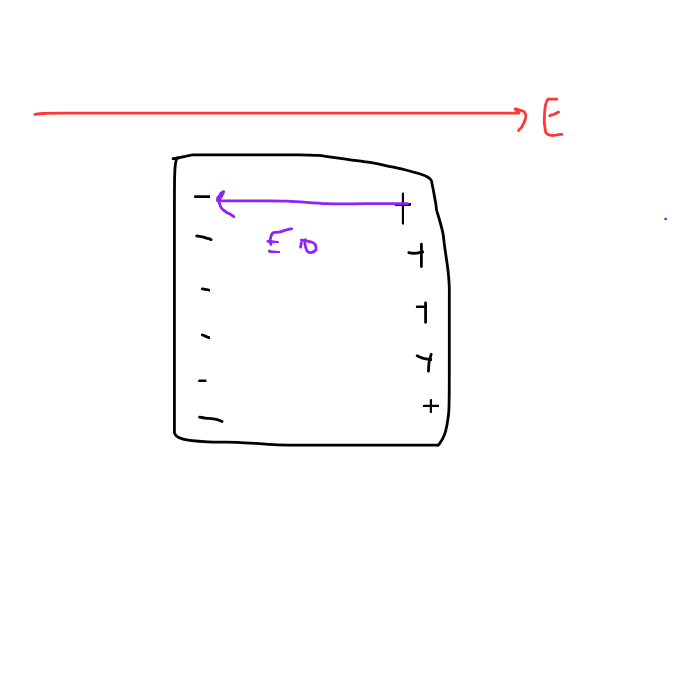

Conductors
What are conductors?
conductors are the material with free electrons in it which promotes the passing of electricity!
Does that means, when i touch metal sometimes, why do i feel the shock! All of these questions might be answered when we would study conductors, and its properties!!!
An Ideal conductor?
Imagine your are riding your bicycle and the road is free, like no cars nothing no pebble even on the road, so it is a smooth ride for you, thats how it is for the conductors inside. For a conductor, its the same, electrons indise moove freely without any hesitation hence its like a smooth flow, but why is it important??? Usually you see, imagine there is a conductor ball made of metal, now why do we need this, we need this to see how does conductors behave!
Lets look at the thicc conductor
What conductors usually do is like, since it has free electrons, imagine a conductor in electric field, and that conductors, since the charges and electrons are free to move, so inside what happens is that the electons interact with the electric field and then they go kaboom, they get attracted(if the field is postive like the animation shown above), and then since due to this a polarity is created, and due to the polarity being created what we can see is that the electric field opposite of the external electric field is created, hence cancelling the net electric field inside the conductor.
Lemme show you !

As you can see here, thats the excat demonstartion of what i have just told you, and now, this means that an equal and opposite force is created due to the charges being induced inside
Gauss law!
Before heading to the next section we need to discuss, gauss law, which is a very simple but yet a beautiful law, on this page
Gauss Law, Pss a secret page!